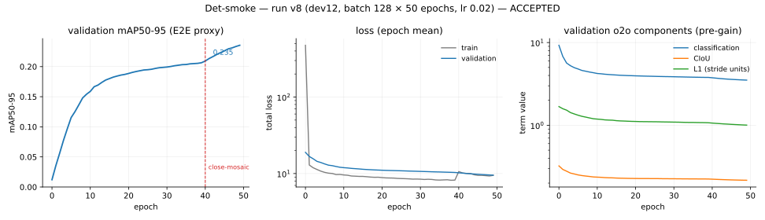
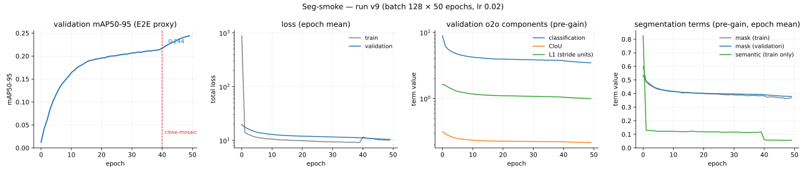
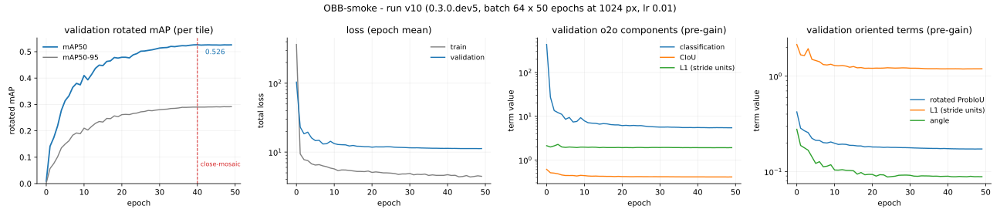
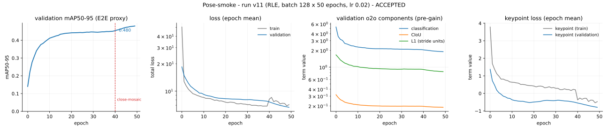

📈 Reproduction report¶
A living document (D10): one section lands with each 0.MINOR, recording what was reproduced, what was assumed, and what diverged. Sections are append-only — a later release corrects an earlier claim by adding to it, never by editing the record away.
Independent, from-scratch implementation of the methods described in the YOLO26 paper (arXiv:2606.03748, [R1]). No Ultralytics source code, configuration, or weights were consulted at any point; see PROVENANCE.md for the source allowlist and the audit trail.
🎯 0.1.0 — Detection¶
What was reproduced¶
The detector as [R1] describes it: a DFL-free dual-head architecture whose one-to-one branch supports NMS-free inference, trained with Small-Target-Aware label assignment, Progressive Loss branch reweighting, and the MuSGD hybrid optimizer.
| mechanism | [R1] reference | implementation |
|---|---|---|
| dual head, DFL-free | sec. 3.2, Fig. S2 | models/heads/detect.py — one-to-many and one-to-one branches share a backbone/neck forward; boxes are direct ltrb distances, no distribution bins |
| NMS-free E2E decode | sec. 3.2.2 | decode/topk_e2e.py — top-k over the one-to-one branch, no suppression op |
| TAL assignment | R4 (arXiv:2108.07755) | assign/tal.py — t = s^alpha * u^beta, alpha 1, beta 6, per-GT target normalization |
| STAL small-target assignment | sec. 3.3.3 | assign/stal.py — size-aware surrogate boxes widen the candidate set for small ground truths |
| Progressive Loss | sec. 3.3.1 | losses/progressive.py — branch weight ramps alpha_init 0.8 -> alpha_final 0.1 as a fraction of the epoch budget |
| MuSGD | sec. 3.5 | optim/musgd.py + optim/newton_schulz.py — Muon/SGD hybrid at w_muon 0.5 / w_sgd 0.5 |
Architectural fidelity is gated rather than asserted: test_param_flops.py holds all five scales within ±2% params and ±5% FLOPs of [R1, Table 7] (n: 2.4M/5.4G … x: 55.7M/193.9G).
Det-smoke acceptance¶
The Det-smoke tier (blueprint sec. 10 tier A): n-scale, ~50 COCO epochs, ~1 GPU-day.
Run v8 — dev12, COCO 2017 train, batch 128, lr 0.02, MuSGD, warmup 3 epochs then linear decay to lr0 * 0.01, close-mosaic for the final 10, EMA (decay 0.9999, tau 2000), 16-mixed, seed 0, 50 epochs = 46,250 steps on one RTX PRO 6000, ~8m45s/epoch.
Evaluated on the full COCO val2017 (5000 images) with scripts/eval_det.py, which runs one forward per batch and decodes both paths from it, scoring with torchmetrics MeanAveragePrecision on the faster_coco_eval backend:
| weights | path | mAP50-95 | mAP50 | mAP75 | mAP_S | mAP_M | mAP_L | mAR_100 |
|---|---|---|---|---|---|---|---|---|
| EMA | NMS | 25.30 | 38.12 | 26.94 | 11.86 | 27.09 | 33.88 | — |
| EMA | E2E | 23.84 | 36.00 | 25.15 | 11.64 | 25.86 | 31.38 | 46.07 |
| raw | NMS | 25.33 | 38.45 | 27.05 | — | — | — | — |
| raw | E2E | 24.23 | 36.72 | 25.82 | 11.24 | — | — | — |
| criterion | required | observed | |
|---|---|---|---|
| stable training | no divergence | monotonic validation descent, 50/50 epochs | ✓ |
| val mAP50-95 | > 25 | 25.30 EMA-NMS, 25.33 raw-NMS | ✓ |
| E2E within NMS path | ~1.5 AP | 1.46 EMA, 1.11 raw | ✓ |
| Phase ≤5 gates | green | 474 tests, 5/5 goldens | ✓ |
The E2E deficit is itself a reproducible claim. [R1 sec. 4.4] reports 0.6–0.8 AP between the NMS-free and NMS paths. This run measures 1.11 AP on raw weights and 1.46 on EMA — the right sign and the right order of magnitude, wider than the paper's figure. Whether the residual gap closes at longer schedules is a Det-ablations question, recorded here rather than explained away.

Run v8. Left: the epoch-end E2E mAP proxy logged during training (letterbox coordinates — the acceptance figure above comes from the standalone evaluator). Middle: epoch-mean totals, log axis. Right: the one-to-one branch's pre-gain components; the L1 term is in stride units.
What went wrong first, and why it matters¶
Three earlier attempts failed the same criterion, and the failure is more instructive than the pass.
| run | epochs | mAP50-95 (EMA NMS) | mAR_100 |
|---|---|---|---|
| v2 — attempt 1 | 44/50 | 3.96 | 16.6 |
| v4 — attempt 2 | 100 | 6.28 | 23.7 |
| v7 — stale wheel | 100 | 4.00 | — |
| v8 — attempt 3 | 50 | 25.30 | 46.07 |
Attempt 2's curves carry the signature plainly: the total loss descends the whole way while the components sit flat — its validation L1 term never moves from ~39 between epochs 30 and 90, and validation classification worsens from 6.88 to 7.31 while the training figure falls. A loss going down while nothing underneath it moves is what a mis-scaled term looks like.
Root cause 1 — coordinate frame of the L1 term (A13, WP-078). The head predicts ltrb distances in stride units; the module fed the loss pixel boxes. The legacy DFL-field gain (6.0) is calibrated for the stride frame, so the term ran 8–32× large. Measured on the attempt-2 endpoint, the one-to-one objective decomposed as 97.1% L1, 1.7% classification, 1.1% CIoU — and the gain-weighted arithmetic reproduces the logged validation total exactly, which is what turned a hypothesis into a diagnosis.
The consequence was visible in the classifier, not the boxes. Probed on the pre-fix checkpoint: predicted probability 0.076 at the assigned positive's own class, only 8 of 67,200 anchors above 0.25 confidence, and a mean per-anchor confidence below the 0.01 prior the head was initialized to (A30). Boxes were tight; the scores that rank them were noise. mAP is a ranking metric, so the runs sat in single digits regardless of localization quality.
Dividing the L1 differences by each positive anchor's stride moved classification from 1.7% to 23.0% of the objective.
Root cause 2 — augmentation RNG collapse (WP-079). _TrainPipeline seeds one generator at construction, in the parent process, and that copy never advances because the parent never calls __getitem__ when workers are used. Every worker therefore replayed one identical augmentation-parameter stream (diversity 1/num_workers), and once workers became non-persistent for unrelated memory reasons (WP-076) they restarted from that same state every epoch. At 32 workers × 100 epochs the run drew roughly 1/3200 of the intended augmentation parameters. Re-seeding each worker from WorkerInfo.seed restores per-worker, per-epoch streams while keeping the run reproducible from the datamodule seed.
What this cost, and the lesson taken. Both defects are semantic — nothing crashed, no test failed, every gate stayed green through three failed runs totalling ~35 GPU-hours. Unit tests that check shapes and finiteness cannot see a term that is the wrong size or a random stream that repeats. The regression net for 0.2.0 onward therefore pins invariants (loss-term balance, augmentation stream divergence) rather than only shapes, so that a semantic break fails in minutes instead of surfacing as a disappointing mAP a day later.
Assumption outcomes¶
Assumptions the detector tier exercised. Full register in ASSUMPTIONS.md.
| id | subject | outcome |
|---|---|---|
| A8 | LR schedule shape | validated — warmup 3 epochs + linear decay to lr0*lrf carries the acceptance run; the constant-LR deferral it replaced plateaued at 3.96 |
| A13 | loss gains and L1 coordinate frame | revised, then validated — gains 7.5/0.5/6.0 from [R1 Table S2] kept; frame corrected from pixels to stride units |
| A30 | classification bias prior init | validated — -log((1-pi)/pi), pi 0.01, per R24 sec. 5.1; without it the first MuSGD step killed the network |
| A2 | TAL exponents | held at alpha 1, beta 6; not independently ablated at A-tier |
| A31 | warmup convention | absorbed into A8 |
| A32 | train-time resampling filter | non-antialiased fused warp; no acceptance-visible effect |
| A33 | uint8 batch transport | validated — no acceptance-visible effect, 4× smaller IPC |
Deviations from the paper¶
- Epoch budget. ~50 epochs at n-scale, against the paper's from-scratch 500/600-epoch schedules. Det-smoke is a smoke tier by design; the headline comparison against [R1 Table 4] is Det-C and remains a stretch goal.
- No Objects365 pretraining, no evolutionary hyperparameter search (D2).
- Batch-scaled learning rate. lr 0.02 at batch 128, linear scaling from the batch-64 recipe. The unscaled lr 0.01 run at the same batch is attempt 2's configuration and is not separable from the loss-frame defect it also carried, so this project has no clean measurement of the scaling on its own.
- E2E deficit wider than published — 1.11 AP raw against 0.6–0.8 in [R1 sec. 4.4]; see above.
Reproducing this result¶
pip install lucid-yolo==0.0.1.dev12
lucid-download --data-root <root> --splits train val --verify
lucid-yolo fit --config det_smoke.yaml \
--data.data_root <root> --data.batch_size 128 --data.num_workers 32 \
--data.prefetch_factor 1 --model.lr 0.02 --trainer.max_epochs 50 \
--trainer.precision 16-mixed
python scripts/eval_det.py <checkpoint> --data-root <root>
These are the commands as run, at the version named, and are left unedited for that reason. On 0.3.0 and later the same three steps are lucid-data download --data_root <root> --splits '[train,val]' --verify true, the unchanged lucid-yolo fit, and lucid-eval --checkpoint <checkpoint> --data_root <root> (WP-096). lucid-download kept accepting the dashed flags above through 0.3.0; it was removed in 0.4.0 as that release said it would be (WP-110), so on 0.4.0 and later the block above must be read through those replacements rather than run as written.
Seed 0 throughout. Cross-platform bitwise reproduction is not claimed (A26: libm last-bit rounding differs across OS and architecture); the run config, seeds, and metric reports are archived under .experiments/det_smoke/.
🖌️ 0.2.0 — Instance segmentation¶
The Seg-smoke tier has run and was accepted 2026-08-10 at roadmap 054's [PRINCIPAL] gate, together with the numeric criterion below, which seg_smoke.yaml had stated only qualitatively. This section records what the run measured and what it was measured against.
What was reproduced¶
Instance segmentation as [R1] describes it: prototype masks assembled by per-instance coefficients, read out of the same one-to-one branch the NMS-free detector deploys, with a training-only auxiliary semantic branch shaping the shared features.
| mechanism | reference | implementation |
|---|---|---|
| prototype–coefficient masks | [R1 Eq. 7], R16 | models/heads/proto.py — ProtoFusion builds the shared feature, ProtoNet emits K=32 prototypes at 160×160 (A15), assemble_masks is the einsum of Eq. 7 |
| coefficient stems on the dual head | A14, A34 | models/build.py — num_coeffs enables a coefficient stem on each branch; tanh activation per A16 |
| instance mask loss | A16 | losses/mask_loss.py — per-pixel BCE cropped to the GT box, normalized by box area, sharing the A11 half-open pixel-centre rule |
| auxiliary semantic branch | [R1 sec. 3.4.1], A17 | models/heads/semantic.py — one 1×1 convolution, A30 prior bias, forward returning None in eval mode; losses/semantic_loss.py supervises it with BCE + soft Dice |
| mask decode | A37 | eval/segment_decode.py — assemble, sigmoid, bilinear upsample, box crop, threshold 0.5, nearest-neighbour inverse letterbox |
Parameter and FLOP fidelity is gated, not asserted: test_param_flops.py holds all five segmentation scales within ±3% params and ±5% FLOPs of [R1 Table S9] (n: 2.72M/9.00G). The parameter tolerance is wider than detection's ±2% because the head's sizing rests on five assumptions (A14, A15, A18, A34, A35) rather than on published structure.
The fast wiring gate runs before any COCO launch: scripts/overfit_micro.py --task segment reaches train mask IoU 0.8146 over 592 instances against a 0.7 floor, decoded through the deployed one-to-one path (goldens/gpu/overfit_micro_seg.json).
The Seg-smoke run¶
Run v9 — COCO 2017 train, task: segment, n scale, batch 128, lr 0.02, MuSGD, warmup 3 epochs then linear decay to lr0 * 0.01, close-mosaic for the final 10, EMA (decay 0.9999, tau 2000), gradient clip 10.0, bf16-mixed, seed 0, deterministic: true, 50 epochs = 46,250 steps on an unrecorded Colab GPU. mask_gain 2.5, semantic_gain 0.5 (A38).
Evaluated on the full COCO val2017 (5000 images) at 640 px with scripts/eval_det.py, one forward per batch decoding both paths, boxes and masks scored by separate torchmetrics MeanAveragePrecision instances on the faster_coco_eval backend — masks at original image resolution against ground truth decoded from the COCO polygons (R12). EMA weights; raw weights were not evaluated for this run.
| path | box mAP50-95 | box mAP50 | box mAP75 | segm mAP50-95 | segm mAP50 | segm mAP75 | segm mAR_100 |
|---|---|---|---|---|---|---|---|
| NMS | 26.12 | 39.12 | 27.93 | 19.01 | 34.40 | 18.63 | 32.75 |
| E2E | 24.85 | 37.25 | 26.59 | 18.20 | 32.72 | 18.03 | 32.50 |
By size bucket, segm against box on the NMS path: 3.74 / 20.06 / 31.79 segm against 12.33 / 28.54 / 34.86 box for small / medium / large.
The NMS-free path costs 1.27 box AP and 0.81 segm AP.
Seg-smoke acceptance¶
seg_smoke.yaml asks for "stable training and a segm mAP that tracks the box mAP". That is a ratio statement, and a ratio is the right shape: it survives a change of scale or schedule where an absolute floor would have to be re-derived for every tier. What it lacked is a number.
Accepted 2026-08-10 at roadmap 054, the criterion below with it: it is the standing Seg-tier criterion from here, not a reading of this run alone.
| criterion | required | observed | |
|---|---|---|---|
| stable training | no divergence | val/loss strictly decreasing across all 49 logged epochs, 19.739 → 10.403 |
✓ |
| wiring gate | train mask IoU ≥ 0.7 | 0.8146 | ✓ |
| box mAP50-95 | > 25, the Det-smoke floor unchanged | 26.12 EMA-NMS | ✓ |
| mask-to-box ratio | segm mAP50-95 ≥ 0.65 × box mAP50-95, same weights, same path | 0.728 NMS, 0.732 E2E | ✓ |
| Phase ≤6 gates | green | 867 tests, 12/12 goldens — the six live sets and the frozen/0.2 snapshot this release cut from them |
✓ |
The box floor is carried over from Det-smoke rather than dropped, because a ratio alone cannot fail a run that collapsed: halve both numbers and the ratio is unchanged. The two criteria answer different questions — the floor asks whether the detector still works, the ratio asks whether the masks followed it — and a tier that supervises masks on top of the detection objective needs both, or a regression in the shared trunk passes as a segmentation success.
The ratio is bounded above by construction: every mask starts from a detection this same model produced and is cropped to it, so segm mAP could equal box mAP only if every mask were exact inside its own box. The question is only how far below, and the run answers it in a way that says where the loss comes from. The mask-to-box ratio is 0.879 at IoU 0.50 — identical to three decimals on both decode paths — and falls to 0.667 (NMS) / 0.678 (E2E) at IoU 0.75. Across sizes it is 0.30 small, 0.70 medium, 0.91 large. The model finds and labels instances about as well as its boxes do; it pays at the boundary, and it pays most where the prototype grid is coarsest relative to the object. At 160×160 for a 640-pixel input (A15), one prototype cell is 4 input pixels: a 32-pixel object spans 8 cells, and below that quantization dominates whatever the coefficients predict.
A floor at 0.65 leaves about 11% relative headroom under the observed 0.728. That band is wide enough to absorb what legitimately moves the aggregate ratio — a different small/medium/large mix, since the buckets themselves span 0.30 to 0.91, plus seed and precision noise — and it is far above where the failures this gate exists to catch would land. Coefficients gathered against the wrong anchors, thresholding before upsampling (A37 ii), a crop in the wrong frame, or an unsupervised one-to-one coefficient stem (A38 ii) do not shave a tenth off the ratio; they collapse it, because the mask either degenerates or lands on the wrong object. A criterion has to separate the failure it names from the noise it should tolerate, and 0.65 does.
An observation, offered as one. The segmentation run's box accuracy is above Det-smoke's: 26.12 against 25.30 on EMA-NMS, 24.85 against 23.84 on EMA-E2E. So mask supervision did not cost box accuracy here. It is not a measurement of what mask supervision costs, because the two runs differ in more than the task — bf16-mixed against 16-mixed, different hardware, and the data-pipeline work that landed in between — and each is a single seed. It belongs in the record, not in the criterion table.
Reading the training curves¶

Run v9, four panels. The epoch-end E2E mAP proxy logged during training (letterbox coordinates — the figures above come from the standalone evaluator); epoch-mean totals; the one-to-one branch's pre-gain components, the L1 term in stride units; and the pre-gain segmentation terms, epoch-mean. The last panel plots the mask term for both splits and the semantic term for training only — the eval-mode branch produces nothing to plot.
Three things a reader should not misread.
val/semantic is 0.0 at every logged epoch, and that is correct. The auxiliary semantic branch is training-only by design: forward returns None whenever the module is not in training mode, keyed on module mode and never on grad mode (A17), so at validation there is no logit to score and the term contributes nothing. A flat zero is the branch being provably absent, not a branch that failed to learn. The branch that is learning shows up in train/semantic, which falls from 0.826 at epoch 0 to 0.057 at epoch 49. The same design is what lets the fused-parameter gate account for exactly one convolution disappearing at deploy.
val/mAP is a letterbox-frame proxy, not the acceptance figure. It scores the E2E path in letterbox coordinates during validation; IoU is invariant to each image's uniform letterbox scaling, so it tracks the original-coordinate protocol closely — 0.2442 at epoch 49 against the standalone evaluator's 0.2485 E2E — but the authoritative number is scripts/eval_det.py at original resolution, as it is for Det-smoke. val/mask (0.5338 → 0.3783) is the mask loss term, not a mask metric.
One validation row is missing from the log, not from the run. The CSV carries 49 validation rows for 50 epochs: epoch 29's is absent. The training rows run continuously across that boundary (step 27,699 to 27,799) and val/mAP resumes its ascent at epoch 30, so this is a logging gap.
A val/segm_mAP metric now exists, decoding the kept detections' masks through the deployed A37 path and scoring them at the prototype grid — a proxy in exactly the sense val/mAP already is. It landed after this run, so no epoch of run v9 carries it; it is available to future segmentation runs, where it removes the situation this one was in, of a segmentation run whose only epoch metric was about its boxes.
Assumption outcomes¶
Assumptions the segmentation tier exercised. Full register in ASSUMPTIONS.md.
| id | subject | outcome |
|---|---|---|
| A15 | prototype resolution, 160×160 at 640 input | held — carries the run; the size-bucket split (0.30 small against 0.91 large mask-to-box) is where its cost is visible, and it is the first thing to ablate if masks are the target |
| A16 | tanh coefficients, box-cropped area-normalized BCE | validated at the wiring scale — train mask IoU 0.8146 against a 0.7 floor; COCO-scale masks train stably under it |
| A17 | training-only auxiliary semantic branch | validated — val/semantic 0.0 at every logged epoch is the branch's eval-mode absence, and train/semantic falls 0.826 → 0.057, so the branch trains and disappears exactly as specified |
| A37 | mask-decode numerics the papers leave open | held — the full-val2017 segm figures are produced by this decode; a wrong threshold order or crop frame would show as a collapsed ratio, and the ratio is 0.73 |
| A38 | mask/semantic gains and which branch is supervised | held — 2.5 / 0.5 keep both terms live without displacing the detection objective; box accuracy did not regress against Det-smoke |
| A11 | anchor centre placement | unchanged from detection; the mask crop reuses its +0.5 half-open rule rather than defining a second one |
Deviations from the paper, and from Det-smoke¶
- Epoch budget. 50 epochs at n scale, against the paper's from-scratch 500/600-epoch schedules. Seg-smoke is a smoke tier by design.
- No Objects365 pretraining, no evolutionary hyperparameter search (D2).
- bf16-mixed, where Det-smoke ran 16-mixed. A hardware-driven choice, not a measured one; the two precisions have not been compared on this codebase.
- lr 0.02, overriding
seg_smoke.yaml's 0.01. The file carries the batch-64 recipe value; the run used the batch-128 linear scaling that Det-smoke settled on. As there, the unscaled value has no clean measurement of its own. - The mask gains are this project's, not the paper's. [R1] gives no gain for either segmentation term; 2.5 and 0.5 are A38's reasoning, argued from where the terms sit in the converged regime rather than from a published number.
- Raw weights unevaluated, so the EMA contribution is unmeasured for this run — Det-smoke reports both.
Reproducing this result¶
lucid-download --data-root <root> --splits train val --verify
lucid-yolo fit --config seg_smoke.yaml \
--data.data_root <root> --data.batch_size 128 --data.num_workers 32 \
--data.prefetch_factor 2 --model.lr 0.02 --trainer.max_epochs 50 \
--trainer.precision bf16-mixed
python scripts/eval_det.py <checkpoint> --data-root <root>
As above, these are the commands as run and are left unedited; the 0.3.0 spellings are lucid-data download and lucid-eval (WP-096).
Seed 0 throughout. The package version installed for run v9 is not recorded in any of its artifacts. Cross-platform bitwise reproduction is not claimed (A26); the metric report is archived under .experiments/seg_smoke/, and the run config, hyperparameters and epoch metrics under lightning_logs/version_9/.
🔄 0.3.0 — Oriented detection¶
The OBB-smoke tier has run and was accepted 2026-08-14 at roadmap 064's [PRINCIPAL] gate. This section records what the run measured, what it can and cannot be compared against, and where the criterion obb_smoke.yaml stated no longer fits the instruments — the acceptance was given on the first two, and explicitly not on the third.
What was reproduced¶
Oriented detection as [R1] describes it: the same DFL-free dual head and NMS-free one-to-one deploy path, with per-branch angle stems, the axis-aligned box terms replaced by rotated ones, and R1 Eq. 15's angle term added.
| mechanism | reference | implementation |
|---|---|---|
| oriented head | [R1] sec. 3.4.3, A44, A45 | models/heads/obb.py — decode_rboxes composes the ltrb rectangle with the predicted heading; o2o_rotated_topk ranks boxes and gathers each angle by the anchor its own box was ranked by |
| rotated IoU loss | R17, A49 | losses/probiou.py — the bounded Hellinger form, restructured so it needs no float64 (MPS has none) |
| retargeted L1 | A50 | the L1 slot moved onto the rotated box's own (cx, cy, w, h); the axis-aligned envelope target fights the rotated term at every non-zero theta |
| angle term | [R1] Eq. 15, A22 | losses/oriented_loss.py at gain 0.25, lowered from 1.0 by WP-093 |
| rotated assignment | A25 | one assignment shared by every term, with rotated candidacy only: gt_rboxes reaches the assigners and nothing else |
| rotated mAP | A24 | eval/dota_eval.py — exact polygon-intersection IoU by Sutherland-Hodgman clipping, ten thresholds, 101-point interpolated recall, 300 detections per tile, R18's difficult rule (A48) |
| 1024 px tiling | R18 sec. 4, A21, A52 | data/tiling.py + lucid-data build-tiles — overlapping crops, parts below 70% of original area flagged difficult |
Parameter and FLOP fidelity is gated against this project's own frozen goldens, not against the paper: [R1] publishes no oriented parameter table (n: 2.56M/14.68G at 1024 px, goldens/params_flops_obb.json). Those numbers catch drift; they corroborate nothing.
The fast wiring gate runs before any DOTA launch: scripts/overfit_micro.py --task obb reaches train rotated mAP50 0.9390 over 592 instances against a 0.9 floor, decoded through the deployed one-to-one path (goldens/gpu/overfit_micro_obb.json).
The OBB-smoke run¶
Run v10 — 0.3.0.dev5, DOTA-v1.0 train tiled at 1024 px with 512 px overlap, task: obb, n scale, batch 64, lr 0.01, MuSGD, warmup 3 epochs then linear decay to lr0 * 0.01, close-mosaic for the final 10, EMA (decay 0.9999, tau 2000), gradient clip 10.0, bf16-mixed, seed 0, deterministic: true, 50 epochs = 23,050 steps on one RTX PRO 6000 (operator-reported; the run artifacts record no device), 7h29m wall clock — about 9 minutes an epoch, derived from the artifact timestamps rather than logged, since no per-epoch timing was recorded here either. Gains: ProbIoU 7.5 (A49, Hellinger), rotated L1 6.0 (A50), angle 0.25 (A22), classification 0.5 unchanged.
The tiling overlap is 512 px, R18's own protocol figure, not A21's 200 px default — a choice the tier made and the register did not, which is recorded here because the two differ by a factor of 2.6 in tiles per image and therefore in everything downstream of tile count.
Evaluated by lucid-eval on the DOTA-v1.0 val split, tiled identically: 10,132 tiles, 101,209 instances, 16,528 of them difficult.
| weights | rotated mAP50-95 | rotated mAP50 | rotated mAP75 | rotated mAR_300 |
|---|---|---|---|---|
| EMA | 0.2914 | 0.5242 | 0.2770 | 0.5075 |
| raw | 0.2867 | 0.5140 | 0.2734 | 0.5013 |
EMA is worth +0.0047 mAP50-95 — small, positive, and the opposite sign to Det-smoke, where raw scored marginally higher.
Every figure above is per tile. Detections from overlapping tiles are not merged back onto whole images here: on an NMS-free path two tiles detecting one object have nothing to suppress the duplicate, so the merge is a policy that must be decided rather than inherited. WP-107 built that policy and roadmap 111 runs it against this checkpoint, below. A per-tile score never pays the duplicate cost whole-image evaluation charges, so these numbers are not comparable to published DOTA results. That is a property of the measurement, not a hedge about its precision.
Two independent measurements agree to four decimals. The same checkpoint scores 0.2914 / 0.5242 on Apple MPS here and 0.2914 / 0.5243 on CUDA in the operator's own run — two accelerators, two tile builds from the same source archive, two machines. That is evidence about the evaluator and the tiler, not about the model, and it is the strongest cross-platform agreement this project has recorded; A26 still declines to claim bitwise reproduction.
The whole-image figure (roadmap 111)¶
The same checkpoint, re-scored through merge_whole_images (WP-107) on the same DOTA-v1.0 val split, CUDA, 458 source images:
| weights | scope | rotated mAP50-95 | rotated mAP50 | rotated mAP75 | rotated mAR_300 |
|---|---|---|---|---|---|
| EMA | per tile | 0.2914 | 0.5242 | 0.2770 | 0.5075 |
| EMA | whole image | 0.3146 | 0.5484 | 0.3111 | 0.5193 |
Every figure rises, not falls. WP-107's own log entry states the merge in isolation "can only lower" a per-tile number, and that remains true of core ownership alone — the reason this run runs the other way is A60, exercised here for the first time against real data: whole-image scoring drops the per-tile 300-detection cap (o2o_rotated_topk's own emission limit, A47), because a source image assembled from roughly 22 tiles is not one forward pass and re-imposing 300 on it would measure a truncation rather than the model. That cap-lifting and the core-ownership merge run together in this measurement rather than separately, so the split between them is not isolated here — see research log.
This is, for the first time, a figure of the same statistic [R1 Tables 10-11] report — whole-image rotated mAP. It is still not compared against those tables in this section: the deviations below (epoch budget, no pretraining, batch/resolution choices) stand regardless of which statistic is quoted, and the design's own target is the paper's relative claims, not its absolute ones (design doc §5.11, §7).
Acceptance, and a criterion that no longer fits¶
obb_smoke.yaml asks for "stable training and a rotated mAP50 that tracks the box mAP". The second half cannot be evaluated on this run, by construction: WP-102 stopped logging val/mAP for oriented runs, because that figure reads the A44 composition's pre-rotation rectangle and therefore scores a run with correct orientations and one with random orientations identically. A criterion asking a rotated metric to track a number that was removed for being uninformative is a criterion that outlived its instrument.
What the acceptance was given on:
| criterion | required | observed | |
|---|---|---|---|
| wiring gate | train rotated mAP50 ≥ 0.9 | 0.9390 | ✓ |
| training completed | 50/50 epochs, all logged | 50 validation rows, no gaps | ✓ |
| no divergence | — | val/loss 103.79 → 11.2470, minimum 11.2447 at epoch 48; 15 of 49 steps rise, the largest 8.4% at epoch 9, every rise after epoch 32 at most 0.15% |
✓ |
| rotated mAP50 | criterion unfit — see above; recorded, not cleared | 0.5242 EMA, per tile | — |
| Phase ≤8 gates | green | 1,555 tests, 20/20 goldens — the seven live sets, frozen/0.2 and the frozen/0.3 snapshot this release cut |
✓ |
The stability row is stated precisely because Det-smoke and Seg-smoke both recorded strictly monotone validation descent and this run did not. Fifteen of forty-nine epoch-to-epoch steps rise, and the shape of that set is what makes it noise rather than divergence: the only two rises worth a number are 5.7% at epoch 3 and 8.4% at epoch 9, inside the warmup and just after it, while every rise from epoch 32 onward is at most 0.15% — six of them, on a curve that is by then flat to three decimals. The minimum is at epoch 48 rather than 49, by 0.0023. This is a different observation from the earlier two tiers, so it is written as one rather than folded into the same "monotonic" phrase.
What a fit criterion would need. Roadmap 111, below, delivers the whole-image number this project could compare against anything published — but no such comparison is drawn in this section, deliberately (design doc §5.11, §7): the smoke tier's epoch budget, missing pretraining and resolution choices stand whichever statistic is quoted. The honest statement remains the one this section makes: a per-tile rotated mAP50 of 0.52 from a 50-epoch n-scale run, on a task whose wiring gate passes at 0.94, with no external reference point.
Reading the training curves¶

Run v10, four panels. The per-tile rotated mAP (both mAP50 and mAP50-95) logged at each epoch end; epoch-mean totals; the one-to-one branch's pre-gain components; and the oriented terms that replace two of them.
Three things a reader should not misread.
Panels 3 and 4 overlap, and panel 3's box curves are inert. val/o2o_box and val/o2o_l1 are computed and logged as diagnostics, but the dual loss is constructed with box_gain = 0 and l1_gain = 0 under this task, so no gradient ever followed them; the live terms are rbox and rl1 in panel 4. val/o2o_box drifting 0.61 → 0.41 is the axis-aligned envelope of boxes that improved for other reasons. The zeroing is done inside the dual loss rather than by subtracting afterwards, because (c + b) - b is not c in floating point.
The opening loss is the classification term, not a defect. train/loss starts at 365 and val/loss at 104, against Det-smoke's tens. Nearly all of it is classification at initialization — train/o2o_cls starts at 2085 and ends at 1.94, val/o2o_cls at 436 and ends at 5.44 — which is what a 15-class objective over the anchor count of a 1024 px input looks like before the prior bias is learned. The rotated terms never show that scale: rbox starts at 0.51, rl1 at 1.91, angle at 0.40.
The metric is flat for the last ten epochs, and that is a finding. val/rotated_mAP50 peaks at 0.5262 at epoch 40 — the epoch close-mosaic fires — and ends at 0.5257, a change of -0.0001 across the whole close-mosaic window. The curve had converged before mosaic was disabled, so this run shows none of the late-epoch lift close-mosaic exists to produce. On Det-smoke that window was worth real accuracy. Two readings are available and this run cannot separate them: either 50 epochs is past the point where this n-scale model has anything left to gain on this data, or the oriented objective's ceiling is set by something the schedule does not touch — A44 being the candidate. Whichever it is, more epochs is not the obvious next experiment.
Assumption outcomes¶
Assumptions the oriented tier exercised. Full register in ASSUMPTIONS.md.
| id | subject | outcome |
|---|---|---|
| A21 | DOTA crop overlap | not exercised at its recorded value — the tier ran at R18's 512 px, not the register's 200 px default. The parameter carried the change without incident; the assumption's own value remains unmeasured |
| A22 | angle-term weight, 0.25 | held — the term falls 0.40 → 0.049 (train) and 0.28 → 0.088 (val) without displacing the box terms; WP-093's reduction from 1.0 is what this run trained under |
| A24 | rotated-IoU metric and its protocol | held — produces the figures above, and agrees to four decimals across MPS and CUDA |
| A25 | rotated candidacy in TAL/STAL | held — one assignment, rotated containment only; the wiring gate at 0.94 is the evidence that positives reach the right anchors |
| A44 | how the angle composes with ltrb | carries the run, and bounds it — every number here is produced by this composition. It is the first thing to ablate, and its cost cannot be read off any metric this run logs, since the axis-aligned view of it is exactly the view WP-102 removed |
| A45 | oriented output tuple, width 7 | held — the deployed decode and the metric adapter share it |
| A48 | difficult-instance matching | exercised at scale — 16,528 of 101,209 val instances are difficult, so 16% of the ground truth is governed by this rule; a wrong reading of it would move the reported number materially |
| A49 | Hellinger ProbIoU at gain 7.5 | held — rbox falls 0.51 → 0.14 (train), 0.42 → 0.17 (val), stably, at the gain A13 set for the axis-aligned term |
| A50 | retargeted L1 at gain 6.0 | held — rl1 falls 1.91 → 0.40 (train), 2.15 → 1.20 (val); the retargeting is what makes those two terms agree rather than fight |
| A52 | object-free crops kept | exercised — 3,956 of 10,132 val tiles carry no annotation. Nearly 40% of the split is background-only, which is a large share of what both training and evaluation saw |
Deviations from the paper, and from the earlier tiers¶
- Epoch budget. 50 epochs at n scale, against the paper's from-scratch schedules. A smoke tier by design.
- No Objects365 pretraining, no evolutionary hyperparameter search (D2).
- No comparison to the paper's oriented numbers. [R1 Tables 10-11] report whole-image rotated mAP50-95 on DOTA-v1.0 val; this section now reports that statistic too (roadmap 111), but deliberately does not set it beside R1's figures — the epoch budget, missing pretraining and other deviations in this list apply regardless of which statistic is quoted, and the design's own target is the paper's relative claims (design doc §5.11, §7).
- Batch 64 at 1024 px, against 128 at 640 for the COCO tiers — 2.56× the pixels per image, so a third more pixels per step than Det-smoke's budget rather than a match for it.
lrstayed at the config's 0.01 rather than being scaled. - 512 px tiling overlap, R18's figure rather than A21's default; see above.
- The angle gain is this project's, not the paper's. [R1] states Eq. 15 and its internal lambda and never its weight against the other terms; 0.25 is A22's reasoning, revised once already.
- The parameter gate has no published reference for this task family, unlike detection ([R1 Table 7]) and segmentation ([R1 Table S9]).
Reproducing this result¶
lucid-data check --data_root <dota> --dataset dota --expected_images 1869 --expected_instances 127843
lucid-data build-tiles --root <dota> --out <tiles> --splits train,val --patch 1024 --overlap 512 --workers 8
lucid-yolo fit --config obb_smoke.yaml \
--data.data_root <tiles> --data.batch_size 64 --data.num_workers 32 \
--data.prefetch_factor 4 --data.persistent_workers true --model.lr 0.01 \
--trainer.max_epochs 50 --trainer.precision bf16-mixed
lucid-eval --checkpoint <checkpoint> --data_root <tiles> --split val --output obb_report.json
DOTA is provisioned by hand — see DATASETS.md; it is neither downloaded by this project nor redistributable through it, and its terms are academic use only.
Seed 0 throughout. Cross-platform bitwise reproduction is not claimed (A26), though this tier's two independent evaluations agree to four decimals. The metric reports are archived under .experiments/obb_smoke/, and the run config, hyperparameters and epoch metrics under lightning_logs/version_10/.
🧾 Consolidated note — detection, segmentation, oriented detection¶
This is not a fourth tier. No run stands behind it; it reads the three sections above against each other and states what only becomes visible once they sit side by side. Nothing here revises a claim those sections make — a correction to any of them belongs in a future section, named as one (D10) — and every number below already appears in ## 0.1.0, ## 0.2.0 or ## 0.3.0.
One trunk, three heads¶
Det-smoke, Seg-smoke and OBB-smoke share the same DFL-free dual head, the same NMS-free one-to-one deploy path, the same TAL/STAL assignment, the same MuSGD optimizer, Progressive Loss, EMA, close-mosaic and warmup-then-linear-decay schedule. Each later tier adds a task-specific branch on top of that trunk rather than a new one: Seg-smoke adds prototype–coefficient masks (ProtoNet/ProtoFusion) and a training-only auxiliary semantic branch; OBB-smoke adds per-branch angle stems, a rotated ProbIoU term, a retargeted L1 target, and R1 Eq. 15's angle term.
The NMS-free deploy path's cost is the one quantity all three tiers could have reported in the same units, and reading the three rows together is what shows that only two of them did:
| tier | path cost | source |
|---|---|---|
| Det-smoke | 1.11 AP (raw), 1.46 AP (EMA) | "E2E within NMS path" acceptance row |
| Seg-smoke | 1.27 box AP, 0.81 segm AP | "The NMS-free path costs 1.27 box AP and 0.81 segm AP" |
| OBB-smoke | not measured | the run reports EMA and raw weights only; no NMS baseline was evaluated for the oriented path, so the one figure comparable across the first two tiers does not exist for the third |
The absence in the third row is itself the finding, not a gap in this note: OBB-smoke deploys the same NMS-free architecture Det-smoke and Seg-smoke measure the cost of, and this project has never reported what that cost is for orientation.
No other cross-tier comparison is attempted here. Det-smoke and Seg-smoke differ in more than task — 16-mixed against bf16-mixed, different hardware, and the data-pipeline work that landed in between (0.2.0's own "offered as one" observation) — and OBB-smoke's figures are per tile, comparable to nothing outside this project (0.3.0's "not comparable to published DOTA results"). Consolidating three sections does not manufacture the comparisons those sections declined to make.
Assumption outcomes, consolidated¶
Union of the three per-tier tables, 23 rows, one per id — no id repeats across tiers by direct table membership. Two ids cross tiers only by textual reference rather than a second table row: A11 is Det-smoke's anchor-centre rule, and Seg-smoke's own row says its mask crop leaves that rule "unchanged from detection" rather than defining a second one; A13 sets Det-smoke's loss gains, and OBB-smoke's A49 row names it directly — the rotated ProbIoU term is carried "at the gain A13 set for the axis-aligned term". Outcome wording is quoted from each tier's own table, not restated. † marks held or not exercised at its recorded value — a value that carried a run without being isolated, not one that was checked.
| id | subject | tier(s) | outcome, as recorded |
|---|---|---|---|
| A2 | TAL exponents | det | held at alpha 1, beta 6; not independently ablated at A-tier † |
| A8 | LR schedule shape | det | validated |
| A11 | anchor centre placement | det, seg | unchanged from detection; the mask crop reuses its +0.5 half-open rule |
| A13 | loss gains and L1 coordinate frame | det (obb's A49 reuses its gain) | revised, then validated |
| A15 | prototype resolution, 160×160 at 640 input | seg | held — the size-bucket split is where its cost is visible † |
| A16 | tanh coefficients, box-cropped area-normalized BCE | seg | validated at the wiring scale |
| A17 | training-only auxiliary semantic branch | seg | validated |
| A21 | DOTA crop overlap | obb | not exercised at its recorded value — the tier ran at R18's 512 px, not the register's 200 px default † |
| A22 | angle-term weight, 0.25 | obb | held † |
| A24 | rotated-IoU metric and its protocol | obb | held † |
| A25 | rotated candidacy in TAL/STAL | obb | held † |
| A30 | classification bias prior init | det | validated |
| A31 | warmup convention | det | absorbed into A8 |
| A32 | train-time resampling filter | det | non-antialiased fused warp; no acceptance-visible effect |
| A33 | uint8 batch transport | det | validated — no acceptance-visible effect, 4× smaller IPC |
| A37 | mask-decode numerics the papers leave open | seg | held † |
| A38 | mask/semantic gains and which branch is supervised | seg | held † |
| A44 | how the angle composes with ltrb | obb | carries the run, and bounds it |
| A45 | oriented output tuple, width 7 | obb | held † |
| A48 | difficult-instance matching | obb | exercised at scale |
| A49 | Hellinger ProbIoU at gain 7.5 | obb | held † |
| A50 | retargeted L1 at gain 6.0 | obb | held † |
| A52 | object-free crops kept | obb | exercised |
Eleven rows carry †. That is not eleven weak results — the wiring gates and acceptance criteria those runs cleared are real — but it is eleven assumptions a passing run has not, by itself, isolated. A25's own row states the sharpest version of this for its own id: the wiring gate at 0.94 is "the evidence that positives reach the right anchors", which is a statement about candidacy, not proof that every clause of the assumption is correct. A21 is the one row where the record explicitly says the assumption itself remains unmeasured even though the run it was supposed to govern completed without incident.
Deviations¶
Common to all three tiers, each stated once per section and repeated here because a deviation three runs share is a property of the project, not of any one run: ~50 epochs at n-scale against the paper's 500/600-epoch from-scratch schedules (a smoke tier by design in every case); no Objects365 pretraining and no evolutionary hyperparameter search (D2); single seed, seed 0, throughout every run.
Specific to one tier:
- Det-smoke — batch-scaled learning rate (lr 0.02 at batch 128, linear-scaled from the batch-64 recipe) with no clean measurement of the unscaled value, since the one run that carried it also carried the loss-frame defect; the E2E deficit itself measured wider than [R1 sec. 4.4]'s published 0.6–0.8 AP.
- Seg-smoke — bf16-mixed where Det-smoke ran 16-mixed, a hardware-driven choice never measured against the alternative;
lroverridden to 0.02 againstseg_smoke.yaml's 0.01, the same batch-128 scaling Det-smoke settled on; the mask and semantic gains (2.5, 0.5) are this project's own, R1 giving neither; raw weights were not evaluated for this run, so the EMA contribution is unmeasured here where Det-smoke reports both. - OBB-smoke — per-tile evaluation only, not the whole-image statistic [R1 Tables 10-11] report; batch 64 at 1024 px against 128 at 640 for the COCO tiers, 2.56× the pixels per image, with
lrleft at the config's 0.01 rather than scaled the way Det-smoke and Seg-smoke scaled theirs; 512 px tiling overlap, R18's own protocol figure rather than A21's 200 px register default; the angle gain (0.25) is this project's own, revised once already (WP-093); the parameter gate has no published reference for this task family, unlike [R1 Table 7] and [R1 Table S9].
The learning-rate line is worth reading across tiers rather than within one: Det-smoke and Seg-smoke both scale lr with batch size from a batch-64 recipe; OBB-smoke, at half that batch and 2.56× the pixels per step, does not. No section argues the choice either way; it sits in three places as three separate facts until this note puts them next to each other.
Hypotheses the record supports¶
Stated as hypotheses, each with the evidence already in this file and what would test it — none of them cleared to a conclusion here.
- The E2E-against-NMS deficit may be a genuine, reproducible excess over [R1 sec. 4.4]'s figure, not measurement noise. Evidence: Det-smoke measures 1.11 AP (raw) / 1.46 AP (EMA) against the paper's reported 0.6–0.8 AP — right sign, right order of magnitude, wider. Test: the Det-smoke section already names this a Det-ablations question — whether the residual gap narrows at the paper's own 500/600-epoch schedule, which this project has not yet run.
- A15's prototype resolution (160×160 at 640 input) sets the small-object mask ceiling. Evidence: the mask-to-box ratio by size bucket is 0.30 small / 0.70 medium / 0.91 large; at 160×160 one prototype cell covers 4 input pixels, so a 32-pixel object spans only 8 cells before quantization dominates whatever the coefficients predict. Test: Seg-smoke's own row names it as the first thing to ablate if masks are the target — rerun at a higher prototype resolution and re-read the same size-bucket split.
- A44's angle composition sets the oriented ceiling. Evidence:
val/rotated_mAP50is flat across the entire close-mosaic window (-0.0001from epoch 40 to 49), where the same window measurably lifted Det-smoke's accuracy. The section records two readings it cannot separate — the model has nothing left to gain at 50 epochs, or the ceiling is set by something the schedule does not touch — and names A44 as the candidate for the second. Test: an ablation of the composition itself (A44 records that the alternative readings — rotated-frame distances, or a rotated anchor offset — are foreclosed only by choice, not by R1), since more epochs is, in the section's own words, not the obvious next experiment. - Not upgraded, stated as the confound it is: whether mask supervision costs box accuracy remains unmeasured. Seg-smoke's box mAP is higher than Det-smoke's (26.12 against 25.30, EMA-NMS), but the two runs differ in precision, hardware and the data-pipeline work that landed between them, and each is a single seed — the section calls this "not a measurement of what mask supervision costs" and this note does not call it one either. Test: a paired run on matched hardware and precision, same seed set, isolating only the presence of the mask/semantic terms.
🕺 0.5.0 — Keypoint detection¶
The Pose-smoke tier has run and was accepted 2026-08-25 at roadmap 125. This section records what the run measured, and states plainly what it was and was not accepted on: the acceptance criterion is R14's mechanism claim — that RLE's learned residual density earns real accuracy over a non-flow control — not a pose figure, and not R1 Table 9's mAP=63.0, which no run in this project has ever targeted.
What was reproduced¶
RLE (R14) composed onto the same dual head, NMS-free deploy path and training loop the other three tasks share, plus COCO's own OKS evaluation protocol (R12).
| mechanism | reference | implementation |
|---|---|---|
| keypoint targets, left/right flip pairing | R12 (17-point schema), A64 | data/targets.py — Targets.keypoints/keypoint_vis; HorizontalFlip(keypoint_flip_pairs=...) swaps identity rather than mirroring coordinates alone, dataset-supplied rather than hardcoded |
| point head stem, decode | R14, WP-122 | models/heads/detect.py — a third stem per branch, raw (x, y) offset plus raw per-axis sigma; decode_keypoints composes with the anchor-centre/stride convention decode_ltrb already uses |
| RLE loss | R14 Eq. 8, Eq. 12, sec. 3.2–3.3, A65, A66, A71, A72 | losses/rle_loss.py — a hand-written 6-layer RealNVP flow over the per-axis-normalized residual, summed with a fixed unit Laplace NLL; the only trainable-weight loss in the project |
| Laplace-NLL control | R14 Table 7, WP-135 | losses/keypoint_nll_loss.py — the same residual likelihood with the flow term removed, everything else held; a keypoint_loss switch, default rle |
| OKS evaluation | R12, A67 | eval/coco_eval.py::evaluate_keypoints — faster_coco_eval.COCOeval_faster(iouType="keypoints", ...), R12's 17-value sigma table when num_keypoints == 17, A67's uniform sigma otherwise; ground truth's own area/iscrowd/num_keypoints/bbox used directly rather than reconstructed |
| epoch-level pose signal | WP-137 | val/oks_mAP, accumulated per validation step and scored once per epoch, beside val/mAP rather than instead of it |
| standalone report | WP-134 | lucid-eval dispatches on the checkpoint's own task, scoring both decode paths from one forward |
No published or gated parameter/FLOP reference exists for this task family: R14 states a loss and an evaluation protocol, never an architecture, so unlike detection ([R1 Table 7]) and segmentation ([R1 Table S9]) there is nothing to hold the point stem's cost against beyond this project's own measurement — see model_cards/keypoints.md.
The fast wiring gate runs before any COCO launch: scripts/overfit_micro.py --task keypoints reaches train OKS AP 0.3357 over 548 instances against a 0.30 floor, on R21's synthetic SymbolShape schema (goldens/gpu/overfit_micro_kp.json) — not COCO's 17-point schema, since the gate's fixture family is geometric shapes throughout, and A67 records the sigma substitution that makes an OKS figure meaningful on it at all.
The Pose-smoke run¶
Run v11 — 0.5.0.dev1, COCO person_keypoints_{train,val}2017, task: keypoints, num_keypoints: 17, keypoint_loss: rle (default), n scale, batch 128, lr 0.02, MuSGD, warmup 3 epochs then linear decay to lr0 * 0.01, close-mosaic for the final 10, EMA (decay 0.9999, tau 2000), gradient clip 10.0, keypoint_gain = 1.0 (A68), bf16-mixed, seed 0, deterministic: true, 50 epochs = 46,250 steps on one unrecorded Colab GPU, 7h06m wall clock — about 8m30s an epoch, derived from artifact timestamps rather than logged, matching the other COCO tiers' own unrecorded-hardware pattern.
The Laplace-NLL control (version_14, read together with this run in Acceptance below) trained the next day under an identical config but for keypoint_loss: laplace_nll, at 0.5.0.dev2; two attempts to launch it (version_12, version_13) wrote only a TensorBoard writer's opening record and nothing else — no config, no step — before exiting, 11 seconds apart. Their cause is not in what synced to Drive; the third attempt (version_14) ran to completion without incident.
Evaluated by lucid-eval on COCO val2017, all 5000 images, person_keypoints_val2017 ground truth:
| path | box mAP50-95 | box mAP50 | box mAP75 | OKS AP | OKS AP50 | OKS AP75 |
|---|---|---|---|---|---|---|
| E2E | 0.5030 | 0.7683 | 0.5323 | 0.2738 | 0.6094 | 0.2138 |
| NMS | 0.5119 | 0.7764 | 0.5417 | 0.2688 | 0.6066 | 0.2042 |
e2e is the row comparable to the training run's own val/mAP and val/oks_mAP — the same convention the earlier three tiers state for their own tables. The box branch's ranking (nms above e2e) and the point branch's (e2e above nms, by 0.005 AP) run opposite directions on this checkpoint; neither has been checked against a second seed.
Reading the training curves¶

Run v11, four panels. The validation box mAP50-95 (the same E2E proxy the other three tiers log); epoch-mean loss totals; the one-to-one branch's pre-gain box/classification/L1 components; and the RLE keypoint term, train and validation.
The metric is still rising at epoch 49. val/mAP (box) has not plateaued the way Det-smoke's or Seg-smoke's had by this point in the schedule — its last epoch-to-epoch step is still positive. Fifty epochs may not be this run's ceiling the way it plausibly is for the oriented tier; no further epochs have been run to check.
Validation loss descends almost without exception. Two of forty-nine epoch-to-epoch steps rise, the larger by 0.30% — an order of magnitude cleaner than the oriented tier's own curve, and closer to Det-smoke's and Seg-smoke's monotone descent. The minimum sits at the final epoch, 49, unlike the oriented run's epoch 48.
The keypoint term crosses zero, and that is expected, not a fault. val/keypoint opens at 1.37 and closes at -0.79 — a negative log-likelihood, unlike every other logged term, is a normalized density's log and has no floor at zero the way a squared error or an IoU term does. A more negative value is a tighter fit, and this run's own trajectory is monotone toward it with the same two-rise exception the loss panel shows.
Acceptance¶
Not accepted on a pose figure. pose_nano_smoke.yaml names training completion and stability, and — the criterion actually decisive for this tier — RLE's mechanism claim against WP-135's Laplace-NLL control, read in full in RESEARCH_LOG.md#wp-125.
| criterion | required | observed | |
|---|---|---|---|
| wiring gate | train OKS AP ≥ 0.30 | 0.3357 | ✓ |
| training completed | 50/50 epochs, all logged | 50 validation rows, no gaps | ✓ |
| no divergence | — | val/loss 18.47 → 6.65, minimum at epoch 49; 2 of 49 steps rise, the largest 0.30% |
✓ |
| RLE beats the Laplace-NLL control | direction of effect, not a magnitude | e2e OKS AP 0.2738 vs 0.2527 (version_14) — same sign as R14 Table 7's 70.5-vs-67.4 AP |
✓ |
keypoint_flip_pairs exercised live, tier scale |
not a mechanism failure | trained without incident, both arms (A64) | ✓ |
keypoint_gain = 1.0 exercised, tier scale |
not a mechanism failure | trained without incident, both arms; tuned adequacy unmeasured (A68) | ✓ |
| Phase ≤11 gates | green | full suite and 21/21 goldens at commit time | ✓ |
| pose figure itself | not the criterion — recorded, not cleared | 0.2738 e2e OKS AP, 0.5030 e2e box mAP | — |
Assumption outcomes¶
Assumptions the keypoint phase exercised. Full register in ASSUMPTIONS.md.
| id | subject | outcome |
|---|---|---|
| A64 | dataset-supplied flip pairing | held, first exercised live at tier scale here — resolved by WP-132's own reading of the training path; this run is the first to train with it through real augmentation rather than through the overfit gate's augmentation-off path |
| A65 | sigma via sigmoid | held — resolved by WP-123 directly from R14 sec. 3.3; unexercised further by this run beyond what WP-132's gate already confirmed |
| A66 | v=0 excluded, v≥1 included equally |
held, exercised at COCO scale — this run is the first to train the policy against real annotation visibility rather than synthetic fixtures |
| A67 | uniform sigma for non-COCO schemas | not exercised — this run's num_keypoints == 17 takes R12's own table, the branch A67 governs |
| A68 | keypoint_gain = 1.0, un-tuned |
the mechanism-failure exposure did not happen — a real pose head trained in both arms rather than one swamped by or swamping the detection objective; tuned adequacy stays unmeasured, no sweep ran |
| A69 | one shared RLE flow across both branches | untested against the alternative — this run trains one flow, as every run does; nothing here compares it to two |
| A70 | off-canvas points carried through unchanged | exercised, unmeasured — real augmentation ran, so some points left the canvas on kept instances; no measurement of how often or with what effect |
| A71 | per-axis residual frame | held — resolved by WP-132's numerical check; this run trained without the non-finite failure the un-normalized frame produced |
| A72 | RealNVP's tanh-bounded log-scale | held — resolved by WP-123/WP-132; no runaway observed across 46,250 steps |
| A73 | keypoints stays hand-driven, not forked onto torchmetrics | unaffected by this run — a WP-138 decision about the standalone evaluator, not the training path this run exercises |
Deviations from the paper, and from the earlier tiers¶
- Epoch budget. 50 epochs at n scale, one seed — a smoke tier by design, and R14's own schedule is a from-scratch top-down crop regressor, not a directly comparable budget to begin with.
- No Objects365 pretraining, no evolutionary hyperparameter search (D2).
- No comparison to any published pose figure. R14 reports on a top-down, cropped-input architecture; this project's dense one-stage detector with a bottom-up point stem is not the same architecture family, and no attempt is made here to set this run's OKS beside R14's own numbers or R1 Table 9's mAP=63.0 (a different paper's different architecture). The acceptance criterion is the mechanism's direction of effect, read from the paired run in
RESEARCH_LOG.md#wp-125, not an absolute figure. - The keypoint gain is this project's, not the paper's. R14 states the loss and never a multi-task weight — it trains a pose-only network.
keypoint_gain = 1.0(A68) is this project's own un-tuned starting point, the same shape of choice A22 made for the oriented tier's angle gain. - The parameter/FLOP gate has no published reference for this task family, unlike detection ([R1 Table 7]) and segmentation ([R1 Table S9]) — R14 states no architecture at all.
- Single flow, not measured against two per branch (A69) — untested here, as in every run so far.
Reproducing this result¶
lucid-data download --data_root /content/coco2017 --splits '[train,val]' --verify true
lucid-data check --data_root /content/coco2017
lucid-yolo fit --config pose_nano_smoke.yaml \
--data.data_root /content/coco2017 \
--data.batch_size 128 --data.num_workers 32 --data.prefetch_factor 1 \
--model.lr 0.02 --trainer.max_epochs 50 --trainer.precision bf16-mixed \
--trainer.default_root_dir /content/drive/MyDrive/lucid_runs
lucid-eval --checkpoint <checkpoint> --data_root /content/coco2017 --output pose_report.json
The Laplace-NLL control arm is the same command against pose_nano_smoke_laplace_nll.yaml, byte-identical but for keypoint_loss.
Seed 0 throughout. Cross-platform bitwise reproduction is not claimed (A26). The metric reports are archived beside each run's own checkpoint, and the run config, hyperparameters and epoch metrics under lightning_logs/version_11/ (RLE) and lightning_logs/version_14/ (Laplace-NLL control).
⚙️ Correcting note — which engine scored each tier¶
Appended, not merged (D10): this adds a fact the four sections above never recorded and revises no number any of them states. It is not a fifth tier — no run stands behind it.
What the record left out¶
Every lucid-eval invocation printed above names a checkpoint, a data root and sometimes an output path, and none names a scoring engine. That was unambiguous when they were written and stopped being so when WP-138 landed in 0.5.0: since then --eval_backend defaults to auto, which takes hotcoco on any host where hotcoco is usable and falls back to faster_coco_eval only where it is not. A reader running the printed commands today therefore scores with a different engine than the one that produced the figures above, on most machines, with nothing in the command or the output to say so. The engine each run actually used is written to info["eval_backend"] in the report JSON (detect_eval.py, pose_eval.py) — but those JSONs are archived off-repo under .experiments/, so the repository alone could not answer the question.
This is a prospective reproducibility gap, not a retroactive falsification: no figure above is wrong, and none moves.
Engine per tier¶
| tier | box/mask engine | how it is known | affected figures |
|---|---|---|---|
| 0.1.0 Det-smoke | faster_coco_eval |
the run predates WP-138; no other engine existed in the package | every mAP/mAR figure in the Det-smoke table |
| 0.2.0 Seg-smoke | faster_coco_eval |
same | box and segm_ figures alike |
| 0.3.0 OBB-smoke | not applicable | the rotated protocol is WP-063's own mAP, not COCOeval; lucid-eval ignores --eval_backend for an obb checkpoint |
none |
| 0.5.0 Pose-smoke | not determinable from this repository | the run was accepted the day WP-138 landed, so auto may have resolved either way on the machine that scored it; the answer is in that run's archived report JSON, not here |
the box mAP only — 0.5030 e2e box mAP in the acceptance table |
The ten OKS keypoint statistics are unaffected in every tier: keypoint scoring is hand-driven faster_coco_eval regardless of --eval_backend (A73), so 0.2738 e2e OKS AP, 0.3357 train OKS AP and the RLE-versus-Laplace-NLL comparison are engine-independent by construction.
Reproducing a figure above¶
Add the engine to the printed command rather than taking today's default:
That is required for 0.1.0 and 0.2.0, where the recorded figures are faster_coco_eval figures. For 0.5.0 it is the conservative choice rather than a known match, for the reason the table gives. The printed command blocks in the sections above are left unedited, as those sections' own notes say they are.
How close the two engines are¶
Held equal by tests/eval/test_coco_eval.py::TestHotcocoParity, to 1e-6 absolute on CPU: the 12 box statistics, the 24 box-plus-mask statistics, targets carrying their own iscrowd and area through the box pass and the mask pass, the never-updated all-zero case, and one end-to-end DualPathEvaluator run over a fixture. Not held by anything: the per-class entries the report drops, and any device other than CPU. The iscrowd/area cases are what closed a real divergence — the hotcoco path once rebuilt both fields from the box, so its size buckets and crowd-ignore rule were not COCO's; that was fixed in 0.8.0 (WP-166), which is after every tier above was accepted and therefore changes none of their numbers.
📐 Correcting note — the 0.5.0 section's source claims¶
Appended, not merged (D10): the 0.5.0 section above is left byte-identical, and this note states which of its sentences are false and what is true instead. No figure moves; no run stands behind this note. Reported as issue 2 on the tracker, confirmed against the arXiv PDF on 2026-09-17, and recorded as D22 (WP-178).
What the section says, and what R1 says¶
The 0.5.0 section was written as if R1 had no pose section. It says the acceptance criterion is "not R1 Table 9's mAP=63.0" and, in the deviations list, calls that figure "a different paper's different architecture"; it says twice that "no published or gated parameter/FLOP reference exists for this task family" because "R14 states no architecture at all"; and its mechanism table sources the point stem and the RLE loss to R14 alone. Every one of those clauses rests on the premise that R1 addresses no keypoint task.
R1 sec. 3.4.2 "Pose Estimation" states the objective: "a parallel sigma branch predicts per-axis uncertainty sigma = (sigma_x, sigma_y) in (0, 1)^2 for each joint", the residual is normalized as Eq. 10, "a shared RealNVP normalizing flow estimates log phi(eps)", and Eq. 11 gives the RLE term; "training uses an Object Keypoint Similarity (OKS)-based loss", and "YOLO26 extends this scheme with Residual Log-Likelihood Estimation". R1 Table 9 ablates the weight split on YOLO26s — (24, 1) 63.0, RLE alone (0, 1) 61.9 and (0, 2) 62.4, OKS alone (48, 0) 61.5 — and R1 Table S10 publishes params and FLOPs for every pose scale at 640 px, n at 2.9 M / 7.5 G and 57.2 AP. All of it was inside R1's allowlisted role from the day the source was registered.
What is true instead¶
| the section's claim | the correction |
|---|---|
| Table 9's 63.0 is "a different paper's different architecture" | R1 is this paper and Table S10's n row, 57.2, is the same architecture family at full budget under the full objective. The gap to this run's 0.27 is budget (50 epochs at n), objective (RLE alone) and stem width (A77); the run was never entitled to close it, and its acceptance — the mechanism's direction of effect — is unchanged |
| "no published or gated parameter/FLOP reference exists for this task family" (stated twice) | R1 Table S10 is that reference. Measured at its protocol (640 px, 1 class, 17 points) the point stem is 13.0% under the paper's n params and 26.5% under its FLOPs, narrowing to -3.0% / +1.0% at x — A77 holds every scale. No gate ships until a width is chosen against the table (roadmap WP-180) |
| point stem sourced to "R14, WP-122" | R1 sec. 3.4.2 names the branch ("a parallel sigma branch") and gives no width; R14 remains the source of what the branch emits |
| RLE loss sourced to "R14 Eq. 8, Eq. 12, sec. 3.2–3.3" | Also R1 sec. 3.4.2, Eq. 10–11 — the composition this term belongs to. R1's printed Eq. 11 carries log sigma twice, R14 Eq. 8 once; the code carries R14's form and A76 records the discrepancy |
| "The keypoint gain is this project's, not the paper's ... R14 states the loss and never a multi-task weight" | R1 Table 9 does state a weight, wRLE = 1 beside wOKS = 24. keypoint_gain = 1.0 coincides with it in value only — Table 9's weights sit beside R1 Table S5's box/cls gains (9.83 / 0.65 at s), this project's beside 7.5 / 0.5 — and the OKS term it is weighed against was absent from this run (A68, A75) |
| "RLE (R14) composed onto the same dual head" is the whole of what was reproduced | That is the RLE half of R1 sec. 3.4.2's objective. The tier is a partial reproduction: R1's RLE term, transcribed from R14 where R1 draws it, without the OKS term R1 composes it with. losses/oks_loss.py lands that term at oks_gain = 0.0 after this run (A75), so the objective every figure above was measured under is unchanged |
What this note does not do¶
It does not re-score the run, move a golden, or change the acceptance the section records: WP-125's criterion was RLE's mechanism claim against a non-flow control, that comparison is R14 Table 7's ablation and is valid as run. The runs that would make the tier a full reproduction — the Table 9 split at smoke scale, the stem width against Table S10, Eq. 11's second log sigma — are roadmap Phase 17, each waiting on an accelerator or a principal.